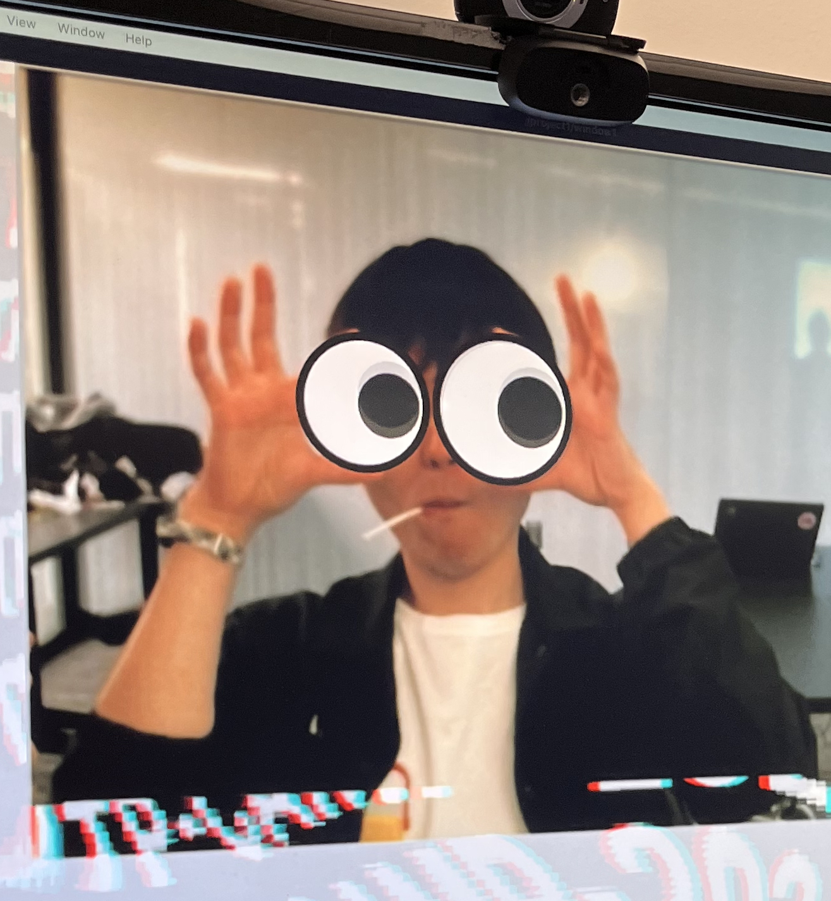

"Emerflux9 : 2層液体を用いた水面ディスプレイの提案". 清水海人，尼岡利崇. NICOGRAPH 2025.（国内・デモ）
"Steering: 他者の意思決定へ介入する社会構造の可視化". 田中咲弥，清水海人，菊池康太，尼岡利崇. NICOGRAPH 2025.（国内・ポスター）
"HydroZen 鹿おどしを利用した飲量提示による熱中症対策システムの提案". 大橋架，清水海人，徳尾篤俊，石川翔太郎. NICOGRAPH 2025.（国内・ポスター）

清水 海人
機構、アクチュエータ、インタラクション、生成表現に関心を持って制作しています。 実装を単なる完成手段としてではなく、問いを観察するための方法として扱い、 プロトタイプを通じて体験の変化を確かめています。2000年生まれ、東京都福生市出身。 現在は明星大学大学院 情報学研究科 博士課程に在学しています。
"Emerflux9 : 2層液体を用いた水面ディスプレイの提案". 清水海人，尼岡利崇. NICOGRAPH 2025.（国内・デモ）
"Steering: 他者の意思決定へ介入する社会構造の可視化". 田中咲弥，清水海人，菊池康太，尼岡利崇. NICOGRAPH 2025.（国内・ポスター）
"HydroZen 鹿おどしを利用した飲量提示による熱中症対策システムの提案". 大橋架，清水海人，徳尾篤俊，石川翔太郎. NICOGRAPH 2025.（国内・ポスター）
"Twisted Band Display 紐と絆りを利用した情報提示手法の提案". 清水海人，尼岡利崇. 映像表現技術科学フォーラム 2024.（国内・口頭）
"太陽光を用いた視覚表現手法の提案". 熊田晴香，兼松美羽，清水海人，菊池康太，尼岡利崇. 映像表現技術科学フォーラム 2024.（国内・ポスター）
"VOICE FLOWER: 想いを伝える花瓶型デバイス制作ワークショップ". 清水海人，圓山風夏，菊池康太，武富拓也，尼岡利崇. NICOGRAPH 2023.（国内・デモ）
"Korekurai Device - Proposal For An Input Device Based On Body Scales And Gestures". Kaito Shimizu, Toshitaka Amaoka. NICOGRAPH International 2023.（国際・ポスター）
"これくらいモデラー：身体尺度とジェスチャを用いたモデリング手法の提案". 清水海人，尼岡利崇. NICOGRAPH 2022.（国内・ポスター）
"Ywine - Proposal to produce a cafe in the COVID-19 crisis". Kaito Shimizu, Toshitaka Amaoka. NICOGRAPH International 2022.（国際・ポスター）
NICOGRAPH 2025 デモ展示賞
NICOGRAPH 2023 ポスター・展示賞
明星大学情報学部 卒研展 支援センター賞
p5.js Web Editorおよびml5.js公式ウェブサイトの日本語翻訳に協力。
"AI / 愛 と創造" 『創発展2026』｜東京
"空間を繋ぐループゴールドバーグマシン" 『Maker Faire Tokyo 2025』 東京ビッグサイト 西4ホール｜東京
"LiftableForm" 『創発展2025』 パルテノン多摩市民ホール｜東京
"MEISEI Clossing" / "Highly Explosive" 『Show All Things Show』 ITP Camp 2024｜New York
"Connecting Past Space" 『モノの移り変わり』 FILTER gallery｜東京
"SnowFlake" / "Sounds Drop" 『明星大学オープンキャンパス』 明星大学｜東京